Prof. Natan T. Shaked, PhD ECE
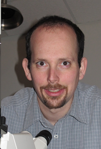 |
Natan T. Shaked is a Professor in the Department of Biomedical Engineering at Tel Aviv University, Israel, and currently the Chair of the Department. He also holds the Chair (Kathedra) of Advanced Biomedical Optical Microscopy. Till April 2011, he was a Visiting Assistant Professor in the Department of Biomedical Engineering at Duke University, Durham, North Carolina, USA. Shaked received his BSc, MSc (Summa Cum Laude), and PhD degrees in Electrical and Computer Engineering from Ben-Gurion University of the Negev, Israel in 2002, 2004 and 2008, respectively. In 2008, Shaked awarded the Bikura Post-Doctoral Fellowship by the Israel Science Foundation (ISF) and performed his postdoctoral research in the Department of Biomedical Engineering at Duke University. Prof. Shaked is the coauthor of more than 100 refereed journal papers and 180 conference papers (including more than 30 plenary, keynote or invited papers), and several book chapters, patents, and an edited book. He is chairing the SPIE Label-Free Imaging and Sensing (LBIS) Conference in SPIE Photonics West, San Francisco, USA, and a Fellow in the Optical Society of America (OSA) and a Fellow in the SPIE. In 2015, he received the ERC starter grant. ..
Contact Details:
Office: Room 410, Multi-disciplinary Center Tel/fax: +972-3-6407100 .
|
.
Dr. Mattan Levi, PhD Biology
Visiting Scientist, Embryologist
 |
Dr. Mattan Levi is a Clinical Embryologist and the manager of the IVF Laboratory in Meir Medical Center. Till 2021, he was the manager of the Andrology Laboratory at Herzeliya Medical Center in Israel (one of the largest IVF centers in Israel). Mattan received his PhD in Cell and Developmental Biology from Tel Aviv University. He conducted research at the fields of reproductive and cancer biology, and was the founder and director of oncology research laboratory at Rabin Medical Center. Mattan collaborated with the OMNI group for several years as a consultant in developing a selection criteria of sperm cells imaged by interference phase microscopy as part of the Momentum project sponsored by Ramot at Tel Aviv University. Since May 2019, he joined the OMNI group as a Visiting Scientist (part time, 20%).
Contact Details:
Email: mattanlevi@gmail.com |
Dr. Michael Haifler, MD Urology
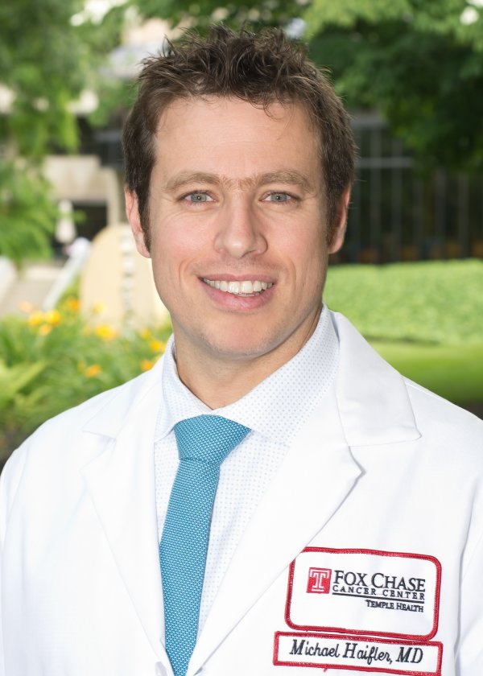 |
Dr. Michael (Miki) Haifler is a Senior Urologic-Oncologist and Surgeon at Sheba Medical Center, where his main clinical interest is treating prostate, bladder and kidney cancers. He holds an MD degree from the Technion - Israel Institute of Technology, and graduated a six-year residency at the Department of Urology at Sheba Medical Center, Tel Ha’Shomer, Israel. He was also an MSc student in the Department of Biomedical Engineering at Tel Aviv University, Israel . Afterwards, Dr. Haifler won the Society of Urologic Oncology Fellowship and joined the Fox Chase Cancer Center in Philadelphia, where his main interests focused on genito-urinary surgical oncology. His current research subjects include interferometric applications for urologic oncology tissue diagnosis and prediction modeling. Dr. Haifler has co-authored of peer-reviewed journal papers and serves as a reviewer and guest editor for several urologic journals. Since July 2021, he joined the OMNI group as a Visiting Scientist (part time, 20%).
Contact Details: |
Dr. Itay Barnea, PhD Biology
 |
Dr. Itay Barnea is a full-time Postdoctoral Research Fellow in the OMNI Group. He started from January 2013. He did his BSc in the Department of Life Sciences in the Ben Gurion University of the Negev, his MSc in the Department of Immunology and Cell Science, and PhD in the Medical School, both in the Tel Aviv University. He dealt with different aspects of cancer: genetic variation, molecular epidemiology, and signal-transduction-based targeted therapy. His current research includes measuring cancer cell metastatic degree using interferometry.
Contact Details: |
Dr. Gili Dardikman-Yoffe, PhD BME
 |
Dr. Gili Dardikman-Yoffe is a full-time Research Fellow in the OMNI Group, specializing in deep-learning algorithm development and image analysis, starting from 2021. She obtained her PhD in Biomedical Engineering from Tel Aviv University in 2019, and then did a Postdoc in the Faculty of Mathematics and Computer Science in the Weizmann institute of Science. She won several prestigious awards, including the Clore Foundation Fellowship for PhD students, the David and Paulina Trotsky Foundation award, the ISMBE Award for PhD students, and the Faculty Postdoctoral Excellence Fellowship at the Weizmann Institute of Science.
.
Contact Details:
Email: gilid@mail.tau.ac.il
|
Dr. Dotan Kamber, PhD Neuroscience
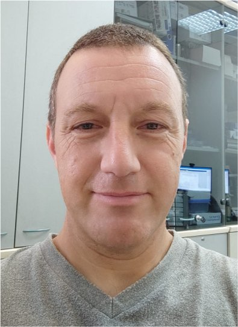 |
Dr. Dotan Kambar is a part-time (20%) Research Fellow in the OMNI Group, specializing in optical microscopy systems, starting from June 2021. Previously, he had nine years of experience as application specialist for advanced life-science microscopy, designing, consulting and realizing custom microscopy setups and other imaging systems. He holds an MA in Biotechnology and Environmental Sciences, an MSc in Brain Sciences, and a PhD in Neuroscience.
.
Contact Details:
Email: dotank@tauex.tau.ac.il
|
Simcha Mirsky, MSc BME
 |
Simcha Mirsky is a PhD student in the Department of Biomedical Engineering at Tel Aviv University. Simcha received his BSc in Medical Engineering from the Jerusalem College of Technology in 2012. His BSc focuses on electro-optical engineering and its application in medical devices and diagnostics. After receiving his BSc, Simcha completed his army service in the Medical Engineering Branch of the IDF as an officer in the Medical Engineering Development Unit. He did his MSc in the OMNI group on sperm phase imaging between March 2016-February 2018. His PhD works, started in March 2018, focuses on off-axis hologram multiplexing.
|
Matan Dudaie, MSc Physics
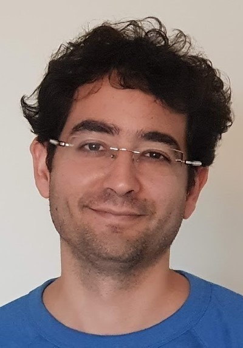 |
Matan Dudaie joined OMNI group as a PhD student in March 2018. Matan holds a BSc and an MSc in Physics from Tel Aviv University, with a thesis on simulation of cell mechanical interactions, performed in the Department of Biomedical Engineering. After 10 years of experience with RF and wave dispersion, he started his Doctorate studies as a part of the PhaseRaceOnChip Project, collaborating with Fraunhofer Institute in Germany. His research includes developing 3D tomography and profiling of cells through phase microscopy using optical interferometry and dielectrophoretic cell rotation.
Contact Details: |
Mayssam Nassir, MSc Mech Eng
PhD Student
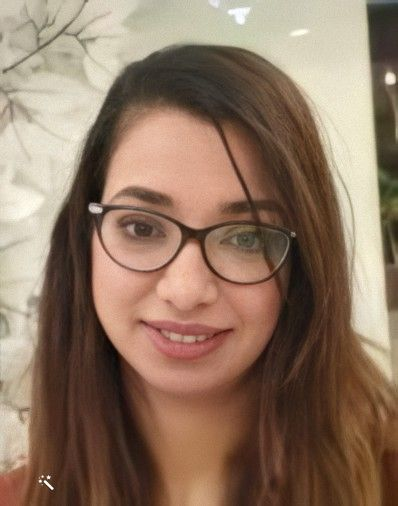 |
Mayssam Nassir is a PhD student in the Department of Biomedical Engineering at Tel Aviv University. Mayssam received her BSc in the Department of Biomedical Engineering in Tel Aviv University (2011). She completed her MSc thesis on modeling the mechanical behavior of Mesenchymal Stem Cells based on phase-contrast microscopy method in the Department of Mechanical Engineering at Tel Aviv University (2016). Mayssam filled a position of Mechanical Engineer in a growing startup for a few years. Then, she started her PhD in the OMNI group, studying the mechanical behavior of sperm cells through computerized modeling techniques and methods. Contact Details: |
Shira Zapesotsky, BSc Physics
 |
Shira Shinar ( Zapesotsky ) is an MSc Student in the Department of Biomedical Engineering at Tel Aviv University. She obtained her BScS in Physics from the Hebrew University of Jerusalem in 2013. During her final year of BSc studies, she worked on building an auxiliary system for a two-photon microscope in the Department of Neuro-Science. In October 2014, she started working toward her thesis in the OMNI group, focusing on acousto-optical interferometry.
Contact Details: |
Noa Rotman-Nativ, BA Biology
 |
Noa Rotman is a full-time MSc student in the Department of Biomedical Engineering at Tel Aviv University. She holds a BSc in Biology from Tel Aviv University. In March 2017, she started working in the OMNI group on measurements of the optical path delay of cancerous cells using off-axis interferometry. She developed a new compact off-axis multiplexing interferometer for the acquisition of quantitative phase images of biological cells. Currently, Noa is working on image processing algorithms and deep learning classification for cancer cells. |
|
Lidor Karako, BSc BME
 |
Lidor Karako is an MSc student in the Department of Biomedical Engineering at Tel Aviv University. He received his BSc from the same department in 2017. In August 2016, together with Dr. Itay Barnea, he started working in the OMNI group on enabling label-free quantitative imaging method for sperm analysis using interferometric phase microscopy (IPM). IPM was used for measurements of the optical path delay, correlated with genetic tests. In October 2017, he started his MSc in the OMNI group on tomography of biological cells.
Contact Details:
Email: LidorKarako@gmail.com |
Keren Ben-Yehuda, BSc BME
 |
Keren Ben-Yehuda is a full-time MSc student in the Department of Biomedical Engineering at Tel-Aviv University. Her B.Sc. specialization includes Signals and Image processing in Biomedical Engineering. In October 2018, she joined the OMNI group and started working on applying different deep learning approaches for the analysis of quantitative phase images in order to assess human sperm cells and provide clinicians with better tools by which they can select sperm cells for in-vitro fertilization.
Contact Details: |
Yuval Atzitz, BSc BME
 |
Yuval Atzitz is a full-time, direct-track MSc student in the Department of Biomedical Engineering at Tel Aviv University. Her BSc specialization is signals and systems in biomedical engineering. In August 2019, she started her MSc in the OMNI group, focusing on tomography and profiling of cells. Contact Details: |
Almog Taieb, BSc BME
 |
Almog Taieb is a full-time, direct-track MSc student in the Department of Biomedical Engineering at Tel Aviv University. Her BSc specialization is signals and systems in biomedical engineering. In August 2019, she joined the OMNI group and started working on a combination of Raman spectroscopy and Interferometry for tissue imaging, and on the integration of optical interferometry and fluorescence imaging of biological cells Contact Details: |
Dana Goldkorn, BSc ECE
MSc Student
 |
Dana Goldkorn is an MSc student in the Department of Electrical Engineering at Tel Aviv University. She received her BSc in Electrical and Computer Engineering at Ben Gurion University in 2015. In October 2019, she started working in the OMNI group, focusing on image processing and deep learning. She is currently working on applying different deep learning techniques on quantitative phase images for virtual staining of biological cells.
Contact Details:
Email: danagoldkorn@mail.tau.ac.il
|
Shani Ben Baruch
MSc Student (with Hayit Greenspan)
Lioz Noy, BSc ECE
MSc Student
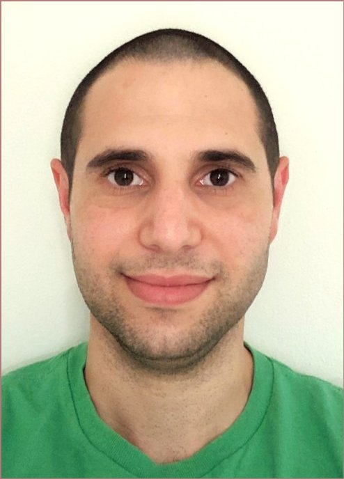 |
Lioz Noy is a full-time MSc student in the Department of Electrical Engineering at Tel Aviv University starting from August 2021, where he started working in the OMNI group part-time already in May 2021. He received his BSc in Electrical and Computer Engineering at the Technion in 2018 with specialization in image processing, computer vision, and machine learning. In the OMNI group, he is working on developing deep-learning and computer-vision techniques for analyzing human sperm cells, with the goal of aiding sperm selection for in vitro fertilization.
Contact Details:
Email: lioznoy@mail.tau.ac.il |
Ofira Dabah, MSc Physics
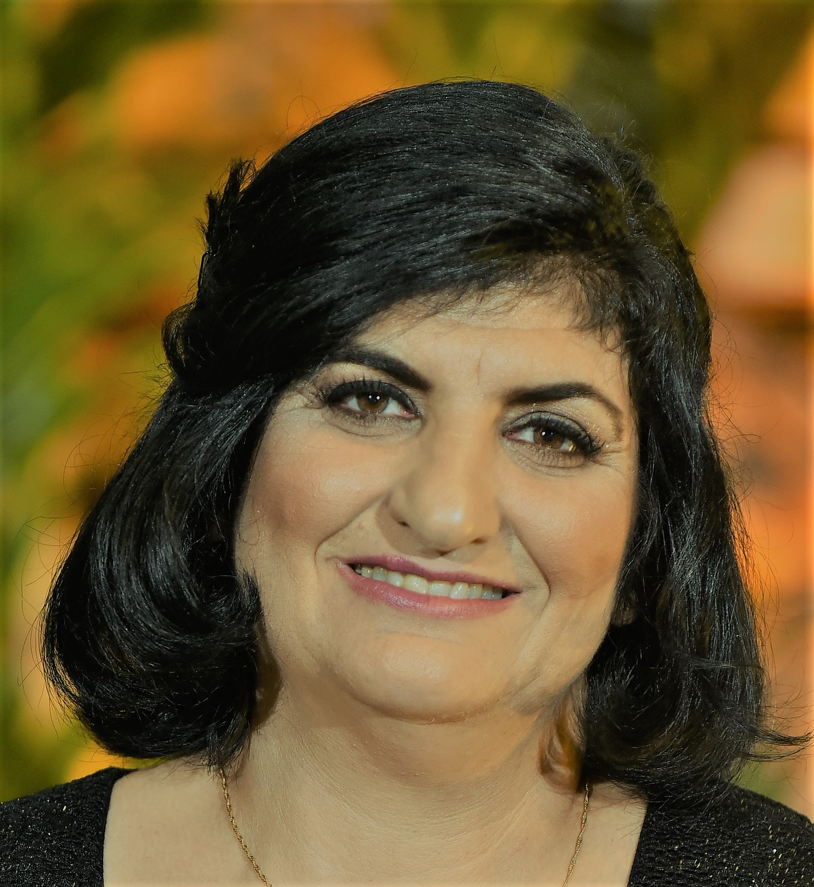 |
Ofira Dabah holds an MSc in Applied Physics, Electroptics from the Hebrew University, and a BSc in Material Science Engineering from Ben Gurion University. She worked in several research institutions, including Ben Gurion University. She joined the OMNI group as a lab engineer in 2018.
Contact Details:
|
Daniel Benvaish
BSc Project Student
Rachel Cur-Cycowicz
BSc Project Student
Nir Turko, MSc BME (Alumni, 2015-2021)
 |
Nir Turko was a PhD student in the Department of Biomedical Engineering at Tel Aviv University. He completed his BSc in Electrical Engineering in Tel Aviv University (2010) and spent a few years in the industry. He completed his MSc thesis on optical interferometry with plasmonic nanoparticles for biomedical imaging in the Department of Biomedical Engineering at Tel Aviv University (2015). He started his PhD in quantitative phase microscopy of dynamic samples, focusing on developing optical methods and algorithms to increase throughput of phase imaging with molecular specificity. Nir is an active member of the International Society for Optics and Photonics (SPIE), serving as the secretary and vice presidnet of the SPIE student chapter in Tel-Aviv University. He is the co-author of 16 refereed journal papers and 15 conference publications.
Next Position after the OMNI Group: R&D Physicist Professional Leader, Orbotech, Yavne, Israel. Contact Details: |
Dr. Garry Berkovic, PhD Chemistry (Alumni, 2020)
|
Dr. Garry Berkovic, whose permanent position is a Research Scientist at Soreq NRC-Yavne, was spending his sabbatical year (2020) as a Visiting Scientist in the OMNI group. Garry received his PhD in 1983 from the Weizmann Institute of Science, and has worked in research for four decades at the Weizmann Institute, University of California, Berkeley (post-doc), Soreq NRC, and Bar-Ilan University (sabbatical). He has published approximately 140 research papers on various topics including spectroscopy, nonlinear optics, and fiber optics. In the OMNI group, he is working on combining Raman spectroscopy and interferometry for imaging of biological samples.
Contact Details: |
Dr. Rongli Guo, PhD Optics (Alumni, 2019-2020)
 |
Dr. Rongli Guo received his BS degree in applied physics and his MS degree in Optical Engineering from Chongqing University, China, in 2003 and 2006, respectively. He obtained his PhD degree in Optics from the University of Chinese Academy of Sciences, Xi’an Institute of Optics and Precision Mechanics, China, in 2015. In 2019-2020, he worked as a Postdoctoral Associate with the OMNI group, Israel. His current research interests included interferometric phase imaging and 3D refractive-index tomography for biological cells.
Contact Details: |
Lina Atamny, BA Chemistry (2017-2020)
 |
Lina Atamny was an MSc student in the School of Chemistry at Tel-Aviv University, working under the joint supervision of Prof. Natan Shaked and Prof. Yael Roichman. Lina obtained her BA degree in Chemistry in 2015 at Tel-Aviv University focused on physical chemistry. Her undergraduate project done in the group of Prof. Yoram Selzer was titled “The measuring and calibration of the resolution for Squeezable breaking junction system”. Currently she is synthesizing gold nano-structures for optical manipulation and imaging.
|
Shir Cohen Maslaton, BSc BME (Alumni, 2017-2020)
 |
Shir Cohen Maslaton was a full-time, direct-track MSc student in the Department of Biomedical Engineering at Tel Aviv University. Her BSc specialization is signals and systems in biomedical engineering. In August 2017, she started her MSc in the OMNI group, focusing on interferometric microscopy combining molecular specificity.
Next Position after OMNI Group: Algorithm developer in QART Medical, Raanana, Israel. Contact Details:
Email: shirc2@mail.tau.ac.il |
Noga Nissim, BSc BME (Alumni, 2017-2020)
") |
Noga Nissim was a full-time, direct-track MSc student in the Department of Biomedical Engineering at Tel Aviv University. Her BSc specialization is signals and systems in biomedical engineering. In August 2017, she started working in the OMNI group, focusing on machine learning of blood cells.
Next Position after OMNI Group: Algorithm Developer at WSC Sports, Givatayim, Israel. Contact Details:
Email: noganissim@mail.tau.ac.il |
Yoav Nygate, BSc BME (Alumni 2016-2020)
 |
Yoav Nygate was a full-time, direct-track MSc student in the Department of Biomedical Engineering at Tel Aviv University. His BSc specialization includes Signals and Systems in Biomedical Engineering. In October 2016, he started working in the OMNI group on measurements of the optical path delay of cancerous cells using off-axis white light interferometry. He then went on to develop an off-axis multiplexing interferometer for the simultaneous acquisition of Quantitative Phase and Fluorescence images of biological cells. Currently, Yoav is working on different Deep Learning approaches for the analysis of Quantitative Phase images. On his spare time, Yoav is an active member of the International Society for Optics and Photonics (SPIE), serving as the President of the SPIE student chapter at Tel Aviv University.
Next Position after OMNI Group: Senior AI and Machine Learning Engineer at EnsoData Madison, Wisconsin, USA. Contact Details:
Email: yoavnygate@gmail.com
|
Hadar Shimoni (Alumni, 2019)
Nofar Shoshan (Alumni, 2019)
Moran Rubin, BSc ECE (Alumni 2016-2019)
Lauren Wolbromsky, BSc BME (Alumni 2016-2019)
 |
Lauren Wolbromsky was an MSc Student in the Department of Biomedical Engineering at Tel Aviv University. She obtained her BSc in the same field with a focus on signals and systems. Her research project was on new tomographic phase microscopy methods in OMNI group.
Next Position after OMNI Group: R&D Physicist at Orbotech, Yavne, Israel. Contact Details:
Email: bornstein@mail.tau.ac.il |
Gili Dardikman, MSc BME (Alumni 2014-2019)
 |
Gili Dardikman was a full-time, direct-track PhD student in the Department of Biomedical Engineering at Tel Aviv University. Her BSc specialization included signals and systems in biomedical engineering. In October 2014, she started her thesis in the OMNI group focusing on machine learning , and rapid CUDA processing of holograms.
Next Position after OMNI Group: Postdoc of Computer Science in the Weizmann Institute, Rehovot, Israel. Contact Details:
Email: gilid@mail.tau.ac.il |
Dr. Gyanendra Singh, PhD Physics (Alumni 2016-2018)

Dr. Pinkie Jacob, PhD Materials and Nano Eng. (Alumni, 2016-2018)

Yaniv Gaon, BSc Electooptics Engineering, MBA (Alumni, 2017-2018)
 |
Yaniv Gaon was the OMNI Group Laboratory Engineer. Yaniv joined the OMNI Group in September 2017 and brings with him over 15 years of hands-on experience in research, development and production of electro-optical systems. Yaniv has thorough understanding of optical systems, optical components, lasers, laser beam shaping, light sources, sensors, detectors and other optical and electro-optical technologies. Yaniv holds a BSc degree in Electro-Optics engineering and an MBA degree, both from the Jerusalem College of Technology (JCT), Israel.
Contact Details: Cellular: +972-58-4315858 |
Amit Nativ, BSc ECE (Alumni, 2015-2018)
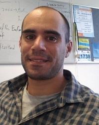 |
Amit Nativ received his BSc in Electrical Engineering in 2013, with majors in Electrooptics, Electromagnetic Fields and Bioelectronics. In the past three years, he worked as a system engineer in Applied Materials Israel, developing scanning electron microscopy (SEM) and image processing algorithms. He joined the OMNI group in Ocbtober 2015. His MSc thesis title is: “Quantitative nanometric measurements using optical interferometry for nondestructive tests”.
Next Position after OMNI Group: Deep Learning and Computer Vision Algorithms Developer, Elbit Systems, Haifa, Israel. |
Dr. Michal Balberg, PhD Neural Computation (Alumni, 2015-2017)
 |
Dr. Michal Balberg is a seasoned entrepreneur in the field of medical devices. She co-founded and led OrNim Medical from inception till commercial sales. Ornim develops and markets noninvasive monitoring devices based on acousto-optics. Dr. Balberg received her Ph.D. in Neural Computation, focusing on optics, volume holography and neural computation, from the Hebrew University of Jerusalem in 1998. Between 1998-2001, she was a Fellow and a Visiting Assistant Professor in the Beckman Institute, University of Illinois at Urbana-Champaign, IL, USA. She joined the OMNI group in March 2015, and was in charge of the Momentum project for commercialization of interferometric technologies for clinical applications.
Contact Details:
Current Position: Senior Lecturer (Assistant Professor), Faculty of Engineering, Holon Technical College (HIT), Holon, Israel. |
Dr. Tamir Gabay, PhD ECE (Alumni, 2011-2017)

|
Dr. Tamir Gabay was the OMNI Group Laboratory Engineer. Tamir received his BSc degree in Electrical Engineering, MSc degree in Bio-Electrical Engineering, and PhD degree in Electrical Engineering in the Faculty of Engineering, Tel-Aviv University, Israel in 1985, 1995 and 2009, respectively. During his MSc he worked on cardial electrical signal research. Specifically the role of synchronization during ventricular fibrillation. His PhD thesis is titled “Carbon nanotube microelectrode array for neuronal patterining and recording”. Currently, he is involed in the research on the role of Amyloid β on neuronal dynamics.
Next position after the OMNI Group: Engineer and project coordinator of the Department of Biomedical Engineering, Tel Aviv University. Contact Details: Office: Room 108, Multi-Disciplinary Center
Tel: +972-3-6408001 Fax: +972-3-6408001 Cellular: +972-50-5522124 Email: tamirgab@post.tau.ac.il |
Sharon Karepov, BSc BME (Alumni, 2013-2017)
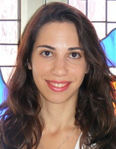 |
Sharon Karepov was an MSc student in the Department of Biomedical Engineering at Tel Aviv University. She graduated her BSc in Biomedical Engineering in Tel Aviv University in September 2012 with majors in biomedical signals and systems. Her fourth year BSc project, tilted: “Digital holographic microscopy for quantitative measurements in red blood cells”, carried out in the Omni group. Since 2008 until September 2011 she has worked as a Medical Research Assistant at METEOR Medical Center. In October 2013, she started her MSc thesis in the OMNI group, in collaboration with Dr. Tal Ellenbogen from the Department of Physical Electronics, in which she develops optical devices based on plasmonic metamaterials for use in optical interferometric systems.
Next Position after OMNI Group: PhD Student in ECE. |
Dr. Ksawery Kalinowski, PhD Physics (Alumni, 2015-2016)

Dr. Miki Haifler, MD (Alumni, 2012-2016)
Mor Habaza, BSc BME (Alumni, 2013-2016)
Pinhas Girshovitz, MSc BME (Alumni, 2011-2015)
PhD Student (Direct Track)
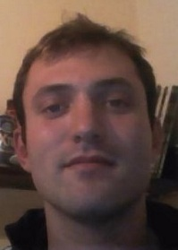 |
Pinhas Girshovitz was a full-time, direct-track PhD student in the Department of Biomedical Engineering at Tel Aviv University, Israel. He holds a BSc (with honour) and an MSc in Biomedical Engineering at Tel Aviv University, with specialization in signals and systems in biomedical engineering. In July 2011, he started working on his PhD thesis titled: “Advanced techniques for compact interferometric systems for measurements in biological cells.” He finished working on his PhD thesis in OMNI group in October 2015, and obtained his PhD degree in September 2016.
Next position after OMNI Group: Physicist (R&D Engineer) in Ornim Medical |
Omry Blum, BSc BME (Alumni 2013-2016)
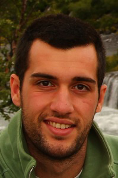 |
Omry Blum was a direct-track MSc student in the Department of Biomedical Engineering at Tel Aviv University. His BSc specialization was in Signals and Systems in Biomedical Engineering. His OMNI-group research focused on interferometry using plasmonic nanoparticles. He graduated in January 2016 Next position after OMNI Group: Optical Meteorology Physicist at Nova Measuring Instruments, Rehovot |
Irena Frenklach, BSc BME (Alumni 2013-2015)
MSc Student
 |
Irena Frenklach was an MSc student in Department of Biomedical Engineering at Tel Aviv University. She finished her BSc in Biomedical Engineering in Tel Aviv University in September 2012, with majors in biomedical signals and systems. In October 2012, she started her MSc thesis on “Development of analytic tools and new parameters based on interferometric methods for phase measurement in biological cells”.
. |
Reut Friedman, BSc Biology (Alumni 2013-2015)
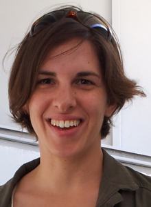 |
Reut Friedman was an MSc. student in the Department of Biomedical Engineering at Tel Aviv University. She holds a BSc in Biology and Psychology, with an emphasis on Brain Sciences, from Tel-Aviv University. During her BSc she worked on animal behavior and learning research. After completing her degree, she worked at the BioImage company conducting MRI scans and image analysis. Her current research title is “Reflective interferometric system combining low-coherence spectral-domain phase microscopy and wide-field holography for characterization of thin samples”. Reut is also interested in the field of neuron measurements using optical microscopy..
Next Position after OMNI Group: Engineer at Applied Materials
Contact Details:
|
Darina Roitshtain, BSc BME (Alumni, 2014-2016)
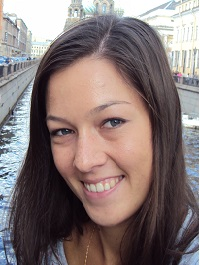 |
Darina Roitshtain was a full-time, direct-track MSc student in the Department of Biomedical Engineering at Tel Aviv University. Her BSc specialization inlcudes Signals and Systems in Biomedical Engineering. In October 2014, she started her thesis in the OMNI group on development of analysis tools based on fluorescence and interferometric microscopy of biological cells. During her master she participated in two international conferences and published two journal papers.
Next Position after OMNI Group: Algorithm Engineer in Corephotonics, Tel Aviv. |
Amit Litwin (Alumni, 2015-2016)

Saar Kariv (Alumni, 2013-2014)
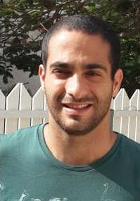 |
Saar Kariv was a fourth year BSc student in Biomedical Engineering at Tel Aviv University. His major is biomedical signals and systems. In October 2013, he started his fourth year BSc project titled: “Fast, real time software application for digital holographic microscopy for quantitative measurements of biological cells”. . Next Position after OMNI Group: Medicine Student in Tel Aviv University and Application Engineer in Applied Materials .
Contact Details:
Email: saarkari@mail.tau.ac.il |
Ohad Backoach (Alumni, 2013-2014)
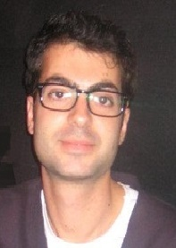 |
Ohad Backoach was a fourth year BSc student in Biomedical Engineering at Tel Aviv University. His major is biomedical signals and systems. In October 2013, he started his fourth year BSc project titled: “Fast, real time software application for digital holographic microscopy for quantitative measurements of biological cells”. . Next Position after OMNI Group: R&D Engineer, Verint. . Contact Details:Email: backoac@walla.co.il |
Sapir Daches (Alumni, 2013-2014)
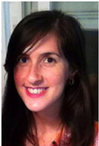 |
Sapir Daches was a fourth year BSc student in Biomedical Engineering at Tel Aviv University. Her major is biomedical signals and systems. In August 2013, she started her fourth year BSc project titled: “Noninvasive and nondestructive accurate thickness measurements using optical interferometry in return mode”. . Next position after OMNI Group: Biomedical Engineer in CardioArt |
Noa Shkedi (Alumni, 2013-2014)
Dr. Yael Bishitz, PhD Biophysics (Alumni, 2012)
.Postdoctorate Associate
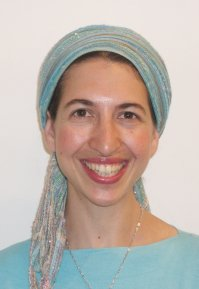 |
Dr. Yael Bishitz (Markovich) was a Postdoctorate Associate in the Department of Biomedical Engineering at Tel Aviv University, Israel. She received her BSc degree in Biophysics, MSc degree in Biochemistry and PhD degree in Physics in the Faculty of Life Sciences and Department of Chemistry and Physics from Bar-Ilan University, Israel in 2005, 2007 and 2011, respectively. During her MSc and PhD, she worked on cancer research. Specifically the role of PKCδ phosphorylation in its cleavage and in the regulation of cell apoptosis (MSc) and the investigation of spheroids’ formation in designated microstructures: tracing, characterization, simulation and prediction (PhD). Her current field of research was optical-mechanical signatures of cancer cells measured by interferometry.
. Next Position after OMNI group: Postdoctoral Associate in Weizmann Institute of Science and then in Zeev Zalevesky’s group, in Bar Ilan University
Contact Details: |
Dr. Anna Peled, PhD Chemistry (Alumni, 2012)
Postdoctorate Associate
| Dr. Anna Peled was a Postdoctorate Associate in the Department of Biomedical Engineering at Tel Aviv University, Israel since January 2012. She received her BSc degree in Chemistry (Pharmaceutical Chemistry), MSc degree in Chemistry (Nanotechnology) and PhD degree in Chemistry (pending) in the Bar-Ilan University, Department of Chemistry, in 2005, 2007 and 2011, respectively. During her MSc and PhD, she focused on the development of functional hybrid nanomaterials. Her field of research was development of various plasmonic nanoparticles for specific targeting and photothermal imaging of amyloid beta plaques for studying Alzheimer’s disease. . Next Position after OMNI Group: Postdoctoral Associate in Prof. Fernando Patolsky’s Lab, School of Chemistry, Tel Aviv University. Then, R&D chemist at PolyPid . Contact Details:
Email: aniapeled@yahoo.com
|

{kind=link}
{kind=link}
Itay Shock, BSc ECE (Alumni, 2010-2012)
MSc Student
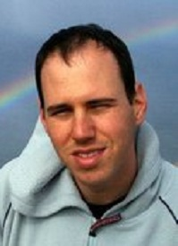 |
Itay Shock was a full-time MSc student in the Department of Biomedical Engineering at Tel Aviv University. He is working in collaboration with the Laboratory of Cellular Biophysics and Imaging of Dr. Uri Nevo. Itay has done his BSc in Electrical Engineering at Tel Aviv University and then worked at Samsung Israel R&D Center as an Electro- Optics Engineer, where he developed and characterized imaging CMOS sensors for the market. Itay also worked in Primesense Israel as an Electro-Optics Engineer, where he developed 3D machine vision devices. In July 2010, he started working on his MSc thesis tilted: “Optical phase system for the measurements of cell dynamics”. He graduated and obtained his MSc degree in October 2012. |
Haniel Gabai, BSc BME (Alumni, 2011-2013)
MSc Student (Direct Track)
 |
Haniel Gabai was a full-time, direct-track MSc student in the Department of Biomedical Engineering. He holds a BSc degree in Biomedical Engineering from Tel Aviv University with specialization in biological signal processing. Haniel started working on his thesis in the OMNI group in November 2011. His research subjects included optical coherence tomography application to skin cancer. He graduated in September 2013.
.
Next Position after OMNI Group: PhD student in Prof. Avishay Eyal’s group, School of Electrical Engineering, Tel Aviv University . Contact Details: Email: haniel.gabai@gmail.com |
Vered Joseph (Alumni, 2011-2012)
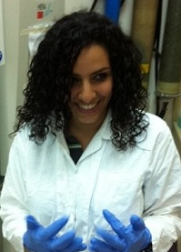 |
Vered Joseph was a fourth year BSc student in Biomedical Engineering at Tel Aviv University. Her major is biomedical signals and systems. In August 2011, she started her fourth year BSc project tilted: “Digital holographic microscopy for quantitative measurements in red blood cells”.
.
|
Yossi Kamir (Alumni, 2012-2013)
 |
Yossi Kamir was the OMNI group mechanical designer. He has vast experience in R&D system integration and lab research mainly in the 2D and 3D printing business. He contributed to system design and definition, designed the lab jigs for the research tests and performed them, gave feedback to the developers in order to fix the bugs and problems all the way to a working prototype in companies such as Scitex Ltd., Varyframe Technologies Ltd. and Objet Geometries Ltd.
. .
Contact Details:
Email: yosikk@gmail.com
|